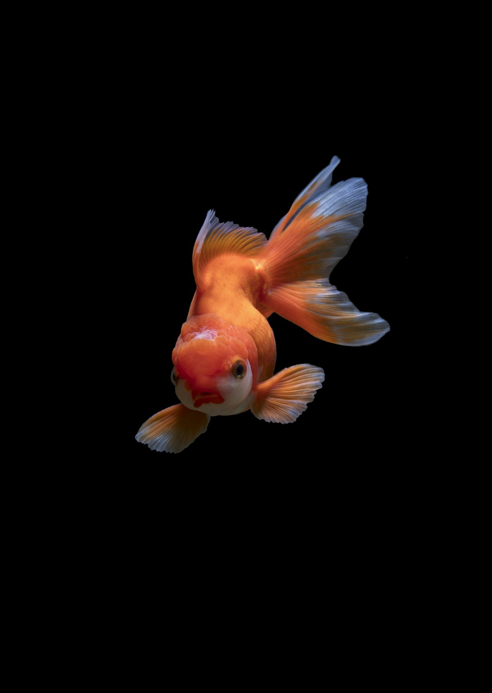
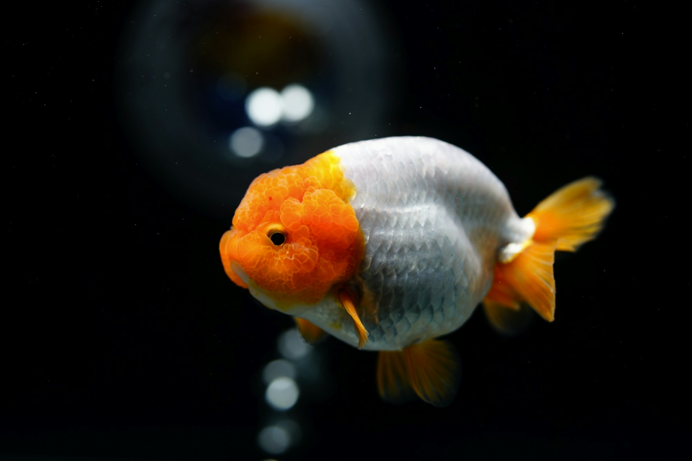
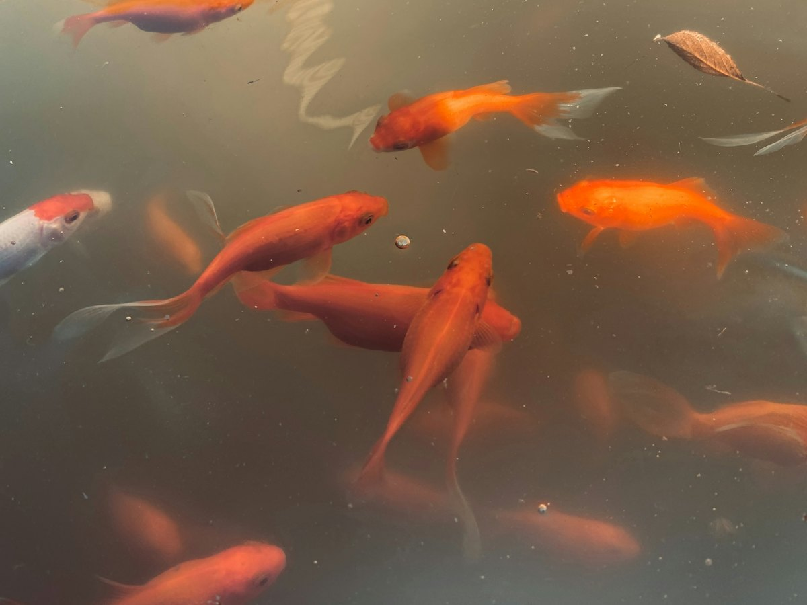
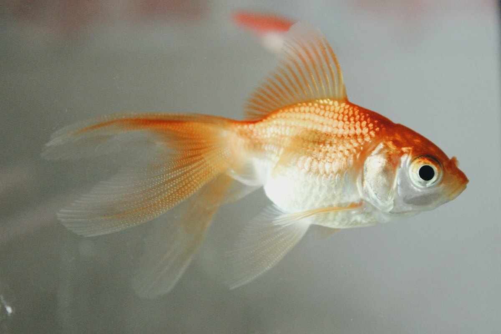
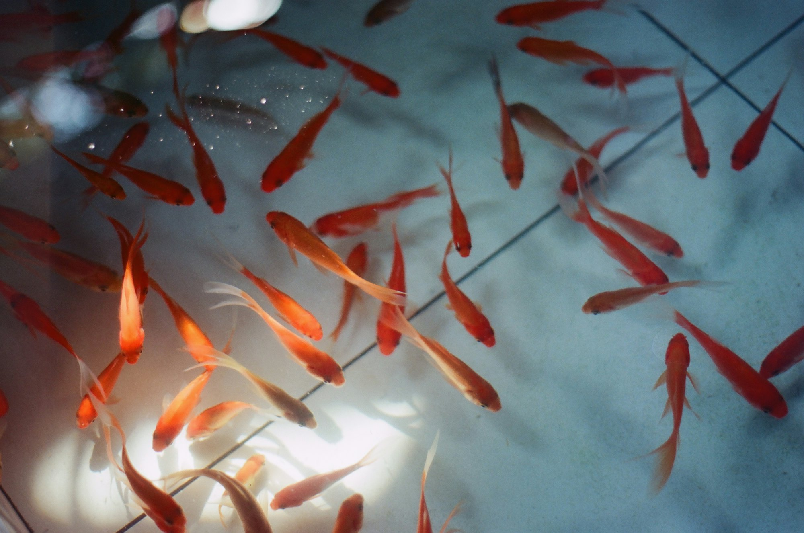

分譲魚
お知らせで、分譲の予定をご案内します。

らんちゅう専門 大阪府松原市
1973年から、らんちゅう専門。らんちゅうの普及と発展のために、情報の提供と販売を行っています。
らんちゅう専門 大阪府松原市
1973年から、らんちゅう専門。らんちゅうの普及と発展のために、情報の提供と販売を行っています。
上から見て、美しく
らんちゅうの
見どころ
らんちゅうは、上から見て楽しむ金魚です。
池の上で、指やマウスを動かしてみてください。タップすると、えさをまきます。
池のイメージです
伊東養魚場は、らんちゅう専門の養魚場です。分譲魚の情報はホームページでお知らせしています。
養魚場の開放日は、お知らせでの指定日のみ。開放日の前日までに、メールまたはお電話で必ずご予約ください。

お知らせで、分譲の予定をご案内します。

指定日のみ。前日までにご予約ください。

池から直接、お届けします。

| 電話受付 | 8:00〜20:00 |
|---|---|
| 開放日 | お知らせでの指定日のみ（要予約） |
開放日のご予約は、前日までにメールまたはお電話で。飼育や病気に関するご質問はご遠慮ください。